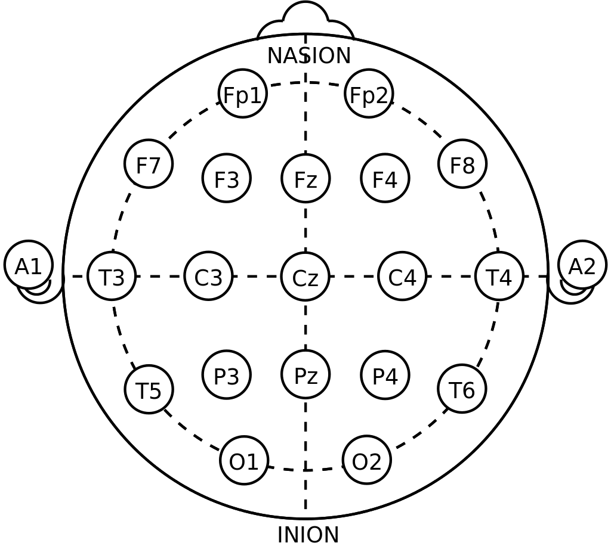

rm(list=ls())
url <- "https://upload.wikimedia.org/wikipedia/commons/thumb/7/70/21_electrodes_of_International_10-20_system_for_EEG.svg/1024px-21_electrodes_of_International_10-20_system_for_EEG.svg.png"
download.file(url, 'img/eegpng.png')14 웨이브 형테의 시각화
14.0.1 Data Visualization example (EEG data)
In public health, another most common used data is bio-signal data. Bio-signal data usually used in medical research, but recently bio-log signals are widely used in public health beyond medical setting. Now I present some example of data visualization using bio-signal data from EEG.
14.0.2 Introduction
EEG refers to the signal of the brain’s electrical activty. Electrodes are placed on the scalp, and each electrodes recorded brain’s activity. EEG is one of the most common methods to support diagnosis of brain diseases such as epilepsy, sleep disorder and even brain death. Furthermore, we can get usufull understand how brain activity correlated to various neurological activity. So, I tried to anaysis EEG signal and hope to predict eye opening status.
The data include information of row_n, AF3, F7, F3, FC5, T7,P7, O1, O2, P8, T8, FC6, F4, F8, AF4, and eyeDetection. Eye Detection is outcome variable data Open or Closed. Others numeric variable about activity of each electrodes. Each electro-nodes place on scalp, and represent area of particular location on brain, as below.

14.0.3 Dataset and Data step
14.0.3.1 Data download and handling
The data set locate here, https://archive.ics.uci.edu/ml/machine-learning-databases/00264/EEG%20Eye%20State.arff. The data was stored into my computer, as name of ‘dl_eeg.txt’ in `data’ folder.
url ='https://archive.ics.uci.edu/ml/machine-learning-databases/00264/EEG%20Eye%20State.arff'
download.file(url, 'data/dl_eeg.txt')To start the data step, some packages should be loaded.
if(!require("tidyverse")) install.packages("tidyverse")
if(!require("htmlTable")) install.packages("htmlTable")
if(!require("broom")) install.packages("broom")
if(!require("ggthemes")) install.packages("ggthemes")
# packages from github
if(!require("devtools")) install.packages("devtools")
library(devtools)
#install_github("jinhaslab/tabf", force = TRUE)
library(tabf)
#library(caret)
library(knitr)
library(kableExtra)
#library(doMC)scan the data and create DB for analysis
mm <- scan('data/dl_eeg.txt', what="", sep="")
which(mm == '@DATA')[1] 48dat<-mm[-c(1:48)]
book <- mm[1:48]
book[-c(1:2, 48)] %>%
matrix(., ncol=3, byrow=TRUE) %>%
.[,2] -> col_names
col_names [1] "AF3" "F7" "F3" "FC5" "T7"
[6] "P7" "O1" "O2" "P8" "T8"
[11] "FC6" "F4" "F8" "AF4" "eyeDetection"the tibble form is easy to hand or transforming. So, I change the data form to tibble style.
tibble(wave =dat) %>%
mutate (val = strsplit(wave, ","), row_n=row_number()) %>%
unnest (cols=c(val)) %>%
select (-wave) %>%
mutate (val = as.numeric(val)) %>%
group_by(row_n) %>%
mutate (wave_colname = col_names) %>%
ungroup() %>%
pivot_wider(names_from = wave_colname, values_from = val)%>%
select (row_n, all_of(col_names)) %>%
arrange (row_n) ->
eegI check the class of all variable.
names(eeg) [1] "row_n" "AF3" "F7" "F3" "FC5"
[6] "T7" "P7" "O1" "O2" "P8"
[11] "T8" "FC6" "F4" "F8" "AF4"
[16] "eyeDetection"sapply(eeg, mode) row_n AF3 F7 F3 FC5 T7
"numeric" "numeric" "numeric" "numeric" "numeric" "numeric"
P7 O1 O2 P8 T8 FC6
"numeric" "numeric" "numeric" "numeric" "numeric" "numeric"
F4 F8 AF4 eyeDetection
"numeric" "numeric" "numeric" "numeric" This data were measure for 117 seconds, I create sec variable to represent measurement time. I create facotor variable for eye opening status `Eye’, as below.
eeg <- eeg %>%
mutate(Eye = ifelse(eyeDetection ==1, 'open', 'closed')) %>%
mutate(sec = seq(0, 117, length.out = nrow(.)))For data step, the long form data were created via pivot_longer function. the key represent each electrode, and the activity were stored into activity variable. EyeDetection, row_n, sec, Eye will be indentical variable for each electrode activity.
eeg %>%
pivot_longer(-c(eyeDetection, row_n, sec, Eye),
names_to = 'electrode',
values_to= 'activity') ->
eegl
eegl %>% head()# A tibble: 6 × 6
row_n eyeDetection Eye sec electrode activity
<int> <dbl> <chr> <dbl> <chr> <dbl>
1 1 0 closed 0 AF3 4329.
2 1 0 closed 0 F7 4009.
3 1 0 closed 0 F3 4289.
4 1 0 closed 0 FC5 4148.
5 1 0 closed 0 T7 4350.
6 1 0 closed 0 P7 4586.14.0.3.2 data explorer
14.0.3.2.1 heatmap
The heatmap can show overview the time course about eye opening status. Dark blue indicate closed status, and light blue indicate eye open status.
eegl %>%
ggplot(aes(x = sec, y = 0.5, fill = eyeDetection)) +
geom_tile() +
scale_fill_continuous(name = "Eye status",
limits = c(0, 1),
labels = c('closed','open'),
breaks = c(0, 1)) +
theme_classic() +
scale_y_continuous(breaks = c(0, 1), 'Eye status') +
scale_x_continuous(breaks = c(0, 30, 60, 90, 117)) +
theme(aspect.ratio=1/7)
14.0.3.2.2 waveform
The activity waves are plotting for data explorer.
eegl %>%
ggplot(aes(x = row_n, y = activity, color = Eye)) +
geom_line(size = c(1)) +
geom_point(alpha = 1)+
facet_grid(electrode ~. ) +
theme_classic() 
There are much of outlier, so the fluctuation of each node’s activity atteunted. So We needed to exclude outlier. To ensure the outlier status, I plot the boxplot, as below. The boxplot also suggested that there were much of outlier effect.
eegl %>%
ggplot(aes(x = electrode, y = activity, color = Eye)) +
geom_boxplot() +
scale_y_continuous(trans='log2') +
theme_classic()
Althoug there are outlier effect on data, but I just want to check the t-test results.
ttest<- eegl %>% select(-eyeDetection, -row_n) %>%
group_by(electrode) %>%
nest() %>%
mutate(stats = map(data, ~t.test(activity ~ Eye, data=.x)),
summarise = map(stats, broom::glance)) %>%
select(electrode, summarise) %>%
unnest(summarise)
ttest %>%
mutate_if(is.numeric, round, 2) %>%
mutate(p.values = ifelse(p.value <0.01, '<0.01', as.character(p.value))) %>%
select(electrode,`difference` = estimate, 'open' = estimate1, 'closed' = estimate2, p.values) %>%
htmlTable(
cgroup=c("", "Eye status", ""),
n.cgroup=c(2, 2, 1),
caption = "Table1. t-test result without outlier cleaning",
align = 'llrc'
)| Table1. t-test result without outlier cleaning | |||||||
|---|---|---|---|---|---|---|---|
| Eye status | |||||||
| electrode | difference | open | closed | p.values | |||
| 1 | AF3 | -52.4 | 4298.4 | 4350.8 | 0.25 | ||
| 2 | F7 | 7.39 | 4013.08 | 4005.69 | <0.01 | ||
| 3 | F3 | -3.47 | 4262.46 | 4265.94 | <0.01 | ||
| 4 | FC5 | 78.98 | 4200.39 | 4121.41 | 0.31 | ||
| 5 | T7 | 0.03 | 4341.75 | 4341.73 | 0.96 | ||
| 6 | P7 | 46.13 | 4664.73 | 4618.59 | 0.29 | ||
| 7 | O1 | 66.82 | 4140.39 | 4073.57 | 0.33 | ||
| 8 | O2 | -1.48 | 4615.39 | 4616.87 | <0.01 | ||
| 9 | P8 | -41.13 | 4200.37 | 4241.5 | 0.29 | ||
| 10 | T8 | -3.61 | 4229.7 | 4233.31 | <0.01 | ||
| 11 | FC6 | -4.88 | 4200.26 | 4205.15 | <0.01 | ||
| 12 | F4 | -4.01 | 4277.43 | 4281.44 | <0.01 | ||
| 13 | F8 | -31.88 | 4600.9 | 4632.77 | 0.15 | ||
| 14 | AF4 | 89.42 | 4456.57 | 4367.15 | 0.31 | ||
14.0.3.3 data cleaning for outlier
The visualization of interquartile range is useful for detecting the presenting of outliers. Outliers are individual values that fall outside of the overall pattern of a data set. So, the outlier can be define when they are far way as several times of interquarile range from median. I made scale_median function to detect outlier. there are several step to make function. first, calculate the interquartile range. The differece between median and value divided by inter quartile range, and the absolute value will be Z-score. That z-score represent that how many times of interquartile range far from median. I used score of 2.5 times par form median for detect outlier.
scale_median <- function(x){
Q1 <- quantile(x, 0.25)
Q3 <- quantile(x, 0.75)
iqr <- c(Q3 - Q1)
ifelse(x < median(x),(x - Q1)/iqr*-1,(x - Q3)/iqr*1 )
}
eegl1<-
eegl %>%
group_by(electrode) %>%
nest() %>%
mutate(Zscores = map (data, ~scale_median(.$activity))) %>%
unnest(cols = c(data, Zscores)) %>%
filter(Zscores < 2.5) #Outlier is Zscores > 2.5 or <-2.5I check box-plot without outlier. That plot sounds good for me. So, I can generate wave form plot.
eegl1 %>%
ggplot(aes(x = electrode, y = activity, color = Eye)) +
geom_boxplot() 
Here, I plot wave form of each electrodes’ activity. Before generate the wave plot, I want increase the working cores.
library('doMC')
library(parallel)
getDoParWorkers()[1] 1number_of_cores <- detectCores()My computer use only 1 core, so I increase number of cores working up-to 46 cores.
registerDoMC(cores = number_of_cores - 2)
getDoParWorkers()[1] 46Then, I want plot wave form.
eegl1 %>%
ggplot(aes(x = sec, y = activity, fill = eyeDetection)) +
geom_point(size = 0.1, alpha =0.5) +
geom_line(aes(color = eyeDetection), show.legend = F) +
facet_grid(electrode ~., scales = "free" ) +
theme_classic() +
scale_fill_continuous(name = "Eye status", limits = c(0, 1),
labels = c('close', 'open'), breaks = c(0, 1)) +
xlab('Time series') +
scale_x_continuous(breaks = c(0, 30, 60, 90, 117))